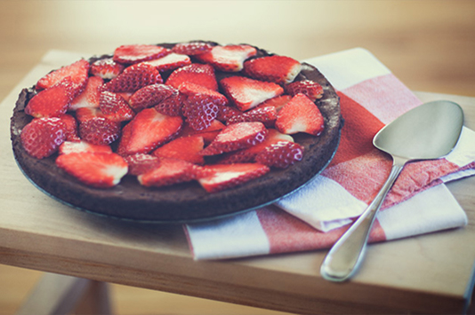
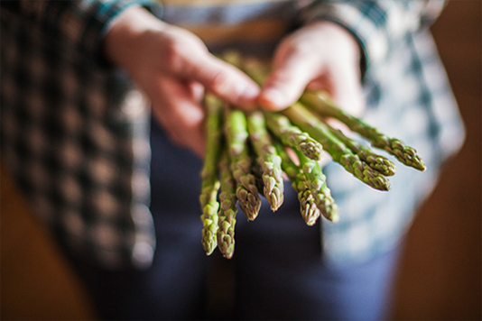
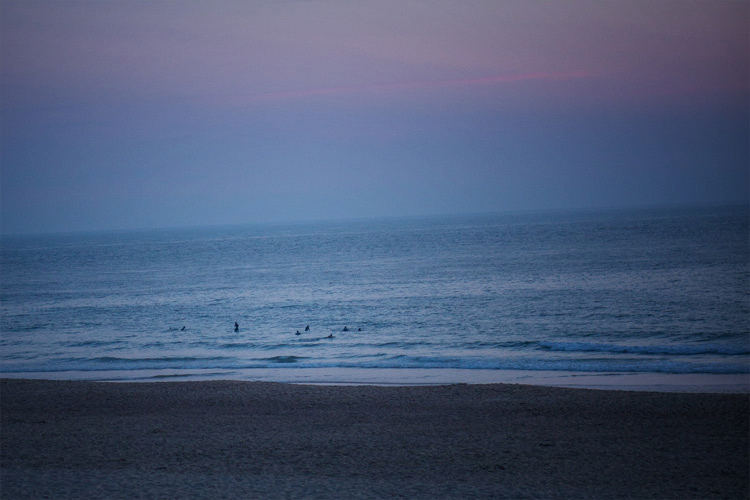

Hello, I'm Ingrid.
I was born in Karlskrona, in the beautiful south of Sweden.
- I'm a surfer girl.
- My favorite meal of the day: breakfast.
- I enjoy listening to the rain.
- I think that the great white shark is incredibly fascinating.
Education:
- Advertising & Magazines, Gamleby Photography School, Sweden, 2012 - 2014
- Photography, Gotlands community school, Sweden, 2011 - 2012
Group exhibitions:
- PUB, Stockholm, "You Are My Mirror", 2013
- Mejeriet, Västervik, "Makeup project" 2013
- Gamleby Centrum, Gamleby, "Winter Exhibition" 2012
- Visby Art Museum, Visby, ”Existence” 2012
- Ungdomenshus Fenix, Visby, "Untitled" 2012
- Hedbergs Café, Visby, "23 Photographers, 23 Photographs" 2012
- Levide Bygdegård, Gotland, "Levide - A Photographic Documentation" 2011